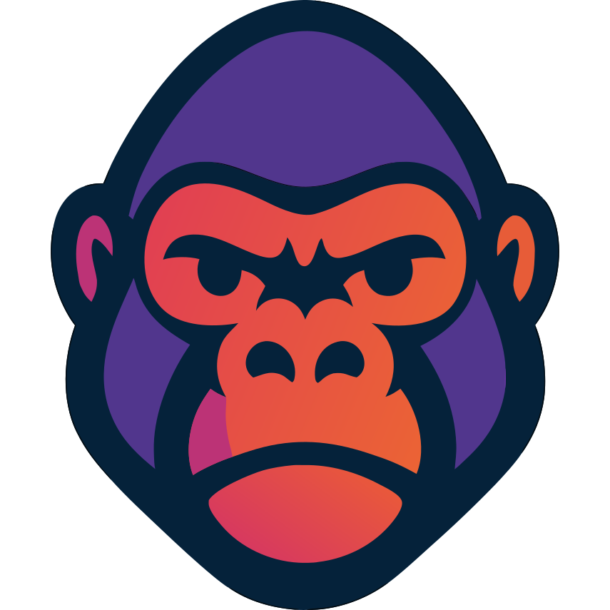

Your sport.
Your connected assistant.
Bring WODira events, athlete activity, event operations and box insights into Antigravity and Gemini CLI.
Source & full documentation · Español · Releases
Install with your client
Antigravity
Use an updated App, CLI or IDE. Validated with CLI 1.4.10.
agy plugin install https://github.com/WODira-app/wodira-antigravityEnable WODira in Customizations and search public events without login. Authenticate its MCP connection when you need private account features.
Gemini CLI
Validated with Gemini CLI 0.66.0.
gemini extensions install https://github.com/WODira-app/wodira-antigravitySearch public events with or without login. For private features, run /mcp auth wodira in Gemini and complete WODira sign-in. Keep local port 3334 available for the callback.
Install from GitHub while marketplace review is pending. A partner application is not an approved marketplace listing. Installation does not grant access to your WODira account.
Five focused workflows
/wodira-connect— Sign-in, discovery, account access and troubleshooting./wodira-athlete— Events, registrations, tickets, orders, classes and your sports agenda./wodira-organizer— Select your organization and review event operations and metrics./wodira-box-insights— Compare demand, attendance, occupancy, time slots and activity–coach combinations; export supported reports to PDF./wodira-peak— Review training, readiness, load and wellness, and apply only authorized planning changes.
Available tools depend on the live public catalog, your account permissions and enabled features. Organizer tools require the appropriate role and access; box demand reports additionally require ANALYTICS. PDF presentation depends on your client's file support.
Direct connection, explicit consent
The plugin connects directly to https://api.wodira.app/mcp without login for public event search, and using OAuth, PKCE and public client metadata for protected features. It bundles no API key, client secret or bearer token, and runs no additional MCP proxy or telemetry service. Your host manages sign-in, account consent and token storage.
Requested WODira information is returned to your chosen client and can enter its model context and conversation history. Read WODira's privacy policy and your client's privacy policy before requesting private athlete, health or financial data. Actions remain subject to your request, server validations and the host's approvals.
Antigravity public client metadata · Gemini CLI public client metadata